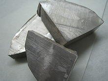

Sodium
|  | |||||||||||||||||||||||||||||||||||||||||||||||||||||||||||||||||||||||||||||||||||||||||||||||||||||||||||||||||||||||||||||||||||||||||||||||||||||||||||||||||||||||||||||||||||||||||||||||||||||||||||||||||||||||||||||||||||||
|
Spectral lines of sodium
|
|||||||||||||||||||||||||||||||||||||||||||||||||||||||||||||||||||||||||||||||||||||||||||||||||||||||||||||||||||||||||||||||||||||||||||||||||||||||||||||||||||||||||||||||||||||||||||||||||||||||||||||||||||||||||||||||||||||
| General properties | |||||||||||||||||||||||||||||||||||||||||||||||||||||||||||||||||||||||||||||||||||||||||||||||||||||||||||||||||||||||||||||||||||||||||||||||||||||||||||||||||||||||||||||||||||||||||||||||||||||||||||||||||||||||||||||||||||||
|---|---|---|---|---|---|---|---|---|---|---|---|---|---|---|---|---|---|---|---|---|---|---|---|---|---|---|---|---|---|---|---|---|---|---|---|---|---|---|---|---|---|---|---|---|---|---|---|---|---|---|---|---|---|---|---|---|---|---|---|---|---|---|---|---|---|---|---|---|---|---|---|---|---|---|---|---|---|---|---|---|---|---|---|---|---|---|---|---|---|---|---|---|---|---|---|---|---|---|---|---|---|---|---|---|---|---|---|---|---|---|---|---|---|---|---|---|---|---|---|---|---|---|---|---|---|---|---|---|---|---|---|---|---|---|---|---|---|---|---|---|---|---|---|---|---|---|---|---|---|---|---|---|---|---|---|---|---|---|---|---|---|---|---|---|---|---|---|---|---|---|---|---|---|---|---|---|---|---|---|---|---|---|---|---|---|---|---|---|---|---|---|---|---|---|---|---|---|---|---|---|---|---|---|---|---|---|---|---|---|---|---|---|---|---|---|---|---|---|---|---|---|---|---|---|---|---|---|---|---|
| Name, symbol | sodium, Na | ||||||||||||||||||||||||||||||||||||||||||||||||||||||||||||||||||||||||||||||||||||||||||||||||||||||||||||||||||||||||||||||||||||||||||||||||||||||||||||||||||||||||||||||||||||||||||||||||||||||||||||||||||||||||||||||||||||
| Pronunciation | /ˈsoʊdiəm/ SOH-dee-əm |
||||||||||||||||||||||||||||||||||||||||||||||||||||||||||||||||||||||||||||||||||||||||||||||||||||||||||||||||||||||||||||||||||||||||||||||||||||||||||||||||||||||||||||||||||||||||||||||||||||||||||||||||||||||||||||||||||||
| Appearance | silvery white metallic | ||||||||||||||||||||||||||||||||||||||||||||||||||||||||||||||||||||||||||||||||||||||||||||||||||||||||||||||||||||||||||||||||||||||||||||||||||||||||||||||||||||||||||||||||||||||||||||||||||||||||||||||||||||||||||||||||||||
| Sodium in the periodic table | |||||||||||||||||||||||||||||||||||||||||||||||||||||||||||||||||||||||||||||||||||||||||||||||||||||||||||||||||||||||||||||||||||||||||||||||||||||||||||||||||||||||||||||||||||||||||||||||||||||||||||||||||||||||||||||||||||||
|
|||||||||||||||||||||||||||||||||||||||||||||||||||||||||||||||||||||||||||||||||||||||||||||||||||||||||||||||||||||||||||||||||||||||||||||||||||||||||||||||||||||||||||||||||||||||||||||||||||||||||||||||||||||||||||||||||||||
| Atomic number | 11 | ||||||||||||||||||||||||||||||||||||||||||||||||||||||||||||||||||||||||||||||||||||||||||||||||||||||||||||||||||||||||||||||||||||||||||||||||||||||||||||||||||||||||||||||||||||||||||||||||||||||||||||||||||||||||||||||||||||
| Standard atomic weight (±) | 22.98976928(2)[1] | ||||||||||||||||||||||||||||||||||||||||||||||||||||||||||||||||||||||||||||||||||||||||||||||||||||||||||||||||||||||||||||||||||||||||||||||||||||||||||||||||||||||||||||||||||||||||||||||||||||||||||||||||||||||||||||||||||||
| Element category | alkali metal | ||||||||||||||||||||||||||||||||||||||||||||||||||||||||||||||||||||||||||||||||||||||||||||||||||||||||||||||||||||||||||||||||||||||||||||||||||||||||||||||||||||||||||||||||||||||||||||||||||||||||||||||||||||||||||||||||||||
| Group, block | group 1 (alkali metals), s-block | ||||||||||||||||||||||||||||||||||||||||||||||||||||||||||||||||||||||||||||||||||||||||||||||||||||||||||||||||||||||||||||||||||||||||||||||||||||||||||||||||||||||||||||||||||||||||||||||||||||||||||||||||||||||||||||||||||||
| Period | period 3 | ||||||||||||||||||||||||||||||||||||||||||||||||||||||||||||||||||||||||||||||||||||||||||||||||||||||||||||||||||||||||||||||||||||||||||||||||||||||||||||||||||||||||||||||||||||||||||||||||||||||||||||||||||||||||||||||||||||
| Electron configuration | [Ne] 3s1 | ||||||||||||||||||||||||||||||||||||||||||||||||||||||||||||||||||||||||||||||||||||||||||||||||||||||||||||||||||||||||||||||||||||||||||||||||||||||||||||||||||||||||||||||||||||||||||||||||||||||||||||||||||||||||||||||||||||
| per shell | 2, 8, 1 | ||||||||||||||||||||||||||||||||||||||||||||||||||||||||||||||||||||||||||||||||||||||||||||||||||||||||||||||||||||||||||||||||||||||||||||||||||||||||||||||||||||||||||||||||||||||||||||||||||||||||||||||||||||||||||||||||||||
| Physical properties | |||||||||||||||||||||||||||||||||||||||||||||||||||||||||||||||||||||||||||||||||||||||||||||||||||||||||||||||||||||||||||||||||||||||||||||||||||||||||||||||||||||||||||||||||||||||||||||||||||||||||||||||||||||||||||||||||||||
| Phase | solid | ||||||||||||||||||||||||||||||||||||||||||||||||||||||||||||||||||||||||||||||||||||||||||||||||||||||||||||||||||||||||||||||||||||||||||||||||||||||||||||||||||||||||||||||||||||||||||||||||||||||||||||||||||||||||||||||||||||
| Melting point | 370.944 K (97.794 °C, 208.029 °F) | ||||||||||||||||||||||||||||||||||||||||||||||||||||||||||||||||||||||||||||||||||||||||||||||||||||||||||||||||||||||||||||||||||||||||||||||||||||||||||||||||||||||||||||||||||||||||||||||||||||||||||||||||||||||||||||||||||||
| Boiling point | 1156.090 K (882.940 °C, 1621.292 °F) | ||||||||||||||||||||||||||||||||||||||||||||||||||||||||||||||||||||||||||||||||||||||||||||||||||||||||||||||||||||||||||||||||||||||||||||||||||||||||||||||||||||||||||||||||||||||||||||||||||||||||||||||||||||||||||||||||||||
| Density near r.t. | 0.968 g·cm−3 | ||||||||||||||||||||||||||||||||||||||||||||||||||||||||||||||||||||||||||||||||||||||||||||||||||||||||||||||||||||||||||||||||||||||||||||||||||||||||||||||||||||||||||||||||||||||||||||||||||||||||||||||||||||||||||||||||||||
| when liquid, at m.p. | 0.927 g·cm−3 | ||||||||||||||||||||||||||||||||||||||||||||||||||||||||||||||||||||||||||||||||||||||||||||||||||||||||||||||||||||||||||||||||||||||||||||||||||||||||||||||||||||||||||||||||||||||||||||||||||||||||||||||||||||||||||||||||||||
| Critical point | 2573 K, 35 MPa (extrapolated) | ||||||||||||||||||||||||||||||||||||||||||||||||||||||||||||||||||||||||||||||||||||||||||||||||||||||||||||||||||||||||||||||||||||||||||||||||||||||||||||||||||||||||||||||||||||||||||||||||||||||||||||||||||||||||||||||||||||
| Heat of fusion | 2.60 kJ·mol−1 | ||||||||||||||||||||||||||||||||||||||||||||||||||||||||||||||||||||||||||||||||||||||||||||||||||||||||||||||||||||||||||||||||||||||||||||||||||||||||||||||||||||||||||||||||||||||||||||||||||||||||||||||||||||||||||||||||||||
| Heat of vaporization | 97.42 kJ·mol−1 | ||||||||||||||||||||||||||||||||||||||||||||||||||||||||||||||||||||||||||||||||||||||||||||||||||||||||||||||||||||||||||||||||||||||||||||||||||||||||||||||||||||||||||||||||||||||||||||||||||||||||||||||||||||||||||||||||||||
| Molar heat capacity | 28.230 J·mol−1·K−1 | ||||||||||||||||||||||||||||||||||||||||||||||||||||||||||||||||||||||||||||||||||||||||||||||||||||||||||||||||||||||||||||||||||||||||||||||||||||||||||||||||||||||||||||||||||||||||||||||||||||||||||||||||||||||||||||||||||||
vapor pressure
|
|||||||||||||||||||||||||||||||||||||||||||||||||||||||||||||||||||||||||||||||||||||||||||||||||||||||||||||||||||||||||||||||||||||||||||||||||||||||||||||||||||||||||||||||||||||||||||||||||||||||||||||||||||||||||||||||||||||
| Atomic properties | |||||||||||||||||||||||||||||||||||||||||||||||||||||||||||||||||||||||||||||||||||||||||||||||||||||||||||||||||||||||||||||||||||||||||||||||||||||||||||||||||||||||||||||||||||||||||||||||||||||||||||||||||||||||||||||||||||||
| Oxidation states | +1, −1 (a strongly basic oxide) | ||||||||||||||||||||||||||||||||||||||||||||||||||||||||||||||||||||||||||||||||||||||||||||||||||||||||||||||||||||||||||||||||||||||||||||||||||||||||||||||||||||||||||||||||||||||||||||||||||||||||||||||||||||||||||||||||||||
| Electronegativity | Pauling scale: 0.93 | ||||||||||||||||||||||||||||||||||||||||||||||||||||||||||||||||||||||||||||||||||||||||||||||||||||||||||||||||||||||||||||||||||||||||||||||||||||||||||||||||||||||||||||||||||||||||||||||||||||||||||||||||||||||||||||||||||||
| Ionization energies | 1st: 495.8 kJ·mol−1 2nd: 4562 kJ·mol−1 3rd: 6910.3 kJ·mol−1 (more) |
||||||||||||||||||||||||||||||||||||||||||||||||||||||||||||||||||||||||||||||||||||||||||||||||||||||||||||||||||||||||||||||||||||||||||||||||||||||||||||||||||||||||||||||||||||||||||||||||||||||||||||||||||||||||||||||||||||
| Atomic radius | empirical: 186 pm | ||||||||||||||||||||||||||||||||||||||||||||||||||||||||||||||||||||||||||||||||||||||||||||||||||||||||||||||||||||||||||||||||||||||||||||||||||||||||||||||||||||||||||||||||||||||||||||||||||||||||||||||||||||||||||||||||||||
| Covalent radius | 166±9 pm | ||||||||||||||||||||||||||||||||||||||||||||||||||||||||||||||||||||||||||||||||||||||||||||||||||||||||||||||||||||||||||||||||||||||||||||||||||||||||||||||||||||||||||||||||||||||||||||||||||||||||||||||||||||||||||||||||||||
| Van der Waals radius | 227 pm | ||||||||||||||||||||||||||||||||||||||||||||||||||||||||||||||||||||||||||||||||||||||||||||||||||||||||||||||||||||||||||||||||||||||||||||||||||||||||||||||||||||||||||||||||||||||||||||||||||||||||||||||||||||||||||||||||||||
| Miscellanea | |||||||||||||||||||||||||||||||||||||||||||||||||||||||||||||||||||||||||||||||||||||||||||||||||||||||||||||||||||||||||||||||||||||||||||||||||||||||||||||||||||||||||||||||||||||||||||||||||||||||||||||||||||||||||||||||||||||
| Crystal structure | body-centered cubic (bcc)
 |
||||||||||||||||||||||||||||||||||||||||||||||||||||||||||||||||||||||||||||||||||||||||||||||||||||||||||||||||||||||||||||||||||||||||||||||||||||||||||||||||||||||||||||||||||||||||||||||||||||||||||||||||||||||||||||||||||||
| Speed of sound thin rod | 3200 m·s−1 (at 20 °C) | ||||||||||||||||||||||||||||||||||||||||||||||||||||||||||||||||||||||||||||||||||||||||||||||||||||||||||||||||||||||||||||||||||||||||||||||||||||||||||||||||||||||||||||||||||||||||||||||||||||||||||||||||||||||||||||||||||||
| Thermal expansion | 71 µm·m−1·K−1 (at 25 °C) | ||||||||||||||||||||||||||||||||||||||||||||||||||||||||||||||||||||||||||||||||||||||||||||||||||||||||||||||||||||||||||||||||||||||||||||||||||||||||||||||||||||||||||||||||||||||||||||||||||||||||||||||||||||||||||||||||||||
| Thermal conductivity | 142 W·m−1·K−1 | ||||||||||||||||||||||||||||||||||||||||||||||||||||||||||||||||||||||||||||||||||||||||||||||||||||||||||||||||||||||||||||||||||||||||||||||||||||||||||||||||||||||||||||||||||||||||||||||||||||||||||||||||||||||||||||||||||||
| Electrical resistivity | 47.7 nΩ·m (at 20 °C) | ||||||||||||||||||||||||||||||||||||||||||||||||||||||||||||||||||||||||||||||||||||||||||||||||||||||||||||||||||||||||||||||||||||||||||||||||||||||||||||||||||||||||||||||||||||||||||||||||||||||||||||||||||||||||||||||||||||
| Magnetic ordering | paramagnetic[2] | ||||||||||||||||||||||||||||||||||||||||||||||||||||||||||||||||||||||||||||||||||||||||||||||||||||||||||||||||||||||||||||||||||||||||||||||||||||||||||||||||||||||||||||||||||||||||||||||||||||||||||||||||||||||||||||||||||||
| Young's modulus | 10 GPa | ||||||||||||||||||||||||||||||||||||||||||||||||||||||||||||||||||||||||||||||||||||||||||||||||||||||||||||||||||||||||||||||||||||||||||||||||||||||||||||||||||||||||||||||||||||||||||||||||||||||||||||||||||||||||||||||||||||
| Shear modulus | 3.3 GPa | ||||||||||||||||||||||||||||||||||||||||||||||||||||||||||||||||||||||||||||||||||||||||||||||||||||||||||||||||||||||||||||||||||||||||||||||||||||||||||||||||||||||||||||||||||||||||||||||||||||||||||||||||||||||||||||||||||||
| Bulk modulus | 6.3 GPa | ||||||||||||||||||||||||||||||||||||||||||||||||||||||||||||||||||||||||||||||||||||||||||||||||||||||||||||||||||||||||||||||||||||||||||||||||||||||||||||||||||||||||||||||||||||||||||||||||||||||||||||||||||||||||||||||||||||
| Mohs hardness | 0.5 | ||||||||||||||||||||||||||||||||||||||||||||||||||||||||||||||||||||||||||||||||||||||||||||||||||||||||||||||||||||||||||||||||||||||||||||||||||||||||||||||||||||||||||||||||||||||||||||||||||||||||||||||||||||||||||||||||||||
| Brinell hardness | 0.69 MPa | ||||||||||||||||||||||||||||||||||||||||||||||||||||||||||||||||||||||||||||||||||||||||||||||||||||||||||||||||||||||||||||||||||||||||||||||||||||||||||||||||||||||||||||||||||||||||||||||||||||||||||||||||||||||||||||||||||||
| CAS Registry Number | 7440-23-5 | ||||||||||||||||||||||||||||||||||||||||||||||||||||||||||||||||||||||||||||||||||||||||||||||||||||||||||||||||||||||||||||||||||||||||||||||||||||||||||||||||||||||||||||||||||||||||||||||||||||||||||||||||||||||||||||||||||||
| History | |||||||||||||||||||||||||||||||||||||||||||||||||||||||||||||||||||||||||||||||||||||||||||||||||||||||||||||||||||||||||||||||||||||||||||||||||||||||||||||||||||||||||||||||||||||||||||||||||||||||||||||||||||||||||||||||||||||
| Discovery and first isolation | Humphry Davy (1807) | ||||||||||||||||||||||||||||||||||||||||||||||||||||||||||||||||||||||||||||||||||||||||||||||||||||||||||||||||||||||||||||||||||||||||||||||||||||||||||||||||||||||||||||||||||||||||||||||||||||||||||||||||||||||||||||||||||||
| Most stable isotopes | |||||||||||||||||||||||||||||||||||||||||||||||||||||||||||||||||||||||||||||||||||||||||||||||||||||||||||||||||||||||||||||||||||||||||||||||||||||||||||||||||||||||||||||||||||||||||||||||||||||||||||||||||||||||||||||||||||||
|
|||||||||||||||||||||||||||||||||||||||||||||||||||||||||||||||||||||||||||||||||||||||||||||||||||||||||||||||||||||||||||||||||||||||||||||||||||||||||||||||||||||||||||||||||||||||||||||||||||||||||||||||||||||||||||||||||||||
| * = excited state | |||||||||||||||||||||||||||||||||||||||||||||||||||||||||||||||||||||||||||||||||||||||||||||||||||||||||||||||||||||||||||||||||||||||||||||||||||||||||||||||||||||||||||||||||||||||||||||||||||||||||||||||||||||||||||||||||||||
{kind=link}
{kind=link}
Sodium /ˈsoʊdiəm/[4] is a chemical element with symbol Na (from Latin: natrium) and atomic number 11. It is a soft, silver-white, highly reactive metal and is a member of the alkali metals; its only stable isotope is 23Na. The free metal does not occur in nature, but instead must be prepared from its compounds. It was first isolated by Humphry Davy in 1807 by the electrolysis of sodium hydroxide. Sodium is the sixth most abundant element in the Earth's crust, and exists in numerous minerals such as feldspars, sodalite and rock salt (NaCl). Many salts of sodium are highly water-soluble. Sodium ions have been leached by the action of water so that sodium and chlorine (Cl) are the most common dissolved elements by weight in the Earth's bodies of oceanic water.
Many sodium compounds are useful, such as sodium hydroxide (lye) for soap-making, and sodium chloride for use as a de-icing agent and a nutrient (edible salt). Sodium is an essential element for all animals and some plants. In animals, sodium ions are used against potassium ions to build up charges on cell membranes, allowing transmission of nerve impulses when the charge is dissipated. The consequent need of animals for sodium causes it to be classified as a dietary inorganic macro-mineral nutrient.
Contents
[hide]Characteristics[edit]
Physical[edit]
Sodium at standard temperature and pressure is a soft silvery metal, that oxidizes to grayish white unless immersed in oil or inert gas. Sodium can be readily cut with a knife, and is a good conductor of electricity. These properties change dramatically at elevated pressures: at 1.5 Mbar, the color changes from silvery metallic to black; at 1.9 Mbar the material becomes transparent, with a red color; and at 3 Mbar sodium is a clear and transparent solid. All of these high-pressure allotropes are insulators and electrides.[5]
When sodium or its compounds are introduced into a flame, they turn it yellow,[6] because the excited 3s electrons of sodium emit a photon when they fall from 3p to 3s; the wavelength of this photon corresponds to the D line at 589.3 nm. Spin-orbit interactions involving the electron in the 3p orbital split the D line into two; hyperfine structures involving both orbitals cause many more lines.[7]
Chemical[edit]
{kind=link}
{kind=link}
When freshly cut, sodium has a bright, silvery luster. If exposed to air, the surface rapidly tarnishes, darkening at first and then forming a white coating of sodium hydroxide and sodium carbonate.
Sodium is generally less reactive than potassium and more reactive than lithium.[8] Like all the alkali metals, it reacts exothermically with water, to the point that sufficiently large pieces melt to a sphere and may explode; this reaction produces caustic soda (sodium hydroxide) and flammable hydrogen gas. When burned in dry air, it mainly forms sodium peroxide as well as some sodium oxide. In moist air, sodium hydroxide results.[9] Sodium metal is highly reducing, with the reduction of sodium ions requiring −2.71 volts.[10] Hence, the extraction of sodium metal from its compounds (such as with sodium chloride) uses a significant amount of energy.[9] However, potassium and lithium have even more negative potentials.[11]
Isotopes[edit]
20 isotopes of sodium are known, but only 23Na is stable. Two radioactive, cosmogenic isotopes are the byproduct of cosmic ray spallation: 22Na with a half-life of 2.6 years and 24Na with a half-life of 15 hours; all other isotopes have a half-life of less than one minute.[12] Two nuclear isomers have been discovered, the longer-lived one being 24mNa with a half-life of around 20.2 microseconds. Acute neutron radiation, such as from a nuclear criticality accident, converts some of the stable 23Na in human blood to 24Na; by measuring the concentration of 24Na in relation to 23Na, the neutron radiation dosage of the victim can be calculated.[13]
Occurrence[edit]
23Na is created in the carbon-burning process in stars by fusing two carbon atoms together; this requires temperatures above 600 megakelvins and a star of at least three solar masses.[14] The Earth's crust contains 2.6% sodium by weight, making it the sixth most abundant element on Earth.[15] Because of its high reactivity, it is never found as a pure element. It is found in many different minerals, some very soluble, such as halite and natron, others much less soluble such as amphibole, and zeolite. The insolubility of certain sodium minerals such as cryolite and feldspar arises from their polymeric anions, which in the case of feldspar is a polysilicate. In the interstellar medium, sodium is identified by the D spectral line; though it has a high vaporization temperature, its abundance allowed it to be detected by Mariner 10 in Mercury's atmosphere.[16]
Compounds[edit]
{kind=link}
Sodium compounds are of immense commercial importance, being particularly central to industries producing glass, paper, soap, and textiles.[17] The sodium compounds that are the most important include table salt (NaCl), soda ash (Na2CO3), baking soda (NaHCO3), caustic soda (NaOH), sodium nitrate (NaNO3), di- and tri-sodium phosphates, sodium thiosulfate (Na2S2O3·5H2O), and borax (Na2B4O7·10H2O).[18] In its compounds, sodium is usually ionically bonded to water and anions, and is viewed as a hard Lewis acid.[19]
{kind=link}
Most soaps are sodium salts of fatty acids. Sodium soaps are harder (higher melting) soaps than potassium soaps.[18] Sodium chloride is extensively used for anti-icing and de-icing and as a preservative; sodium bicarbonate is mainly used for cooking. Along with potassium, many important medicines have sodium added to improve their bioavailability; although in most cases potassium is the better ion, sodium is selected for its lower price and atomic weight.[20]Sodium hydride is used as a base for various reactions (such as the aldol reaction) in organic chemistry, and as a reducing agent in inorganic chemistry.[21]
Aqueous solutions[edit]
Sodium tends to form water-soluble compounds, such as halides, sulfates, nitrates, carboxylates and carbonates. The main aqueous species are the aquo complexes [Na(H2O)n]+, where n = 4–6.[22] The high affinity of sodium for oxygen-based ligands is the basis of crown ethers; macrolide antibiotics, which interfere with Na+ transport in the infecting organism, are functionally related and more complex.[citation needed]
Direct precipitation of sodium salts from aqueous solutions is rare, because sodium salts typically have a high affinity for water; an exception is sodium bismuthate (NaBiO3).[23] Because of this, sodium salts are usually isolated as solids by evaporation or by precipitation with an organic solvent, such as ethanol; for example, only 0.35 g/L of sodium chloride will dissolve in ethanol.[24] Crown ethers, like 15-crown-5, may be used as a phase-transfer catalyst.[25]
Sodium content in bulk may be determined by treating with a large excess of uranyl zinc acetate; the hexahydrate (UO2)2ZnNa(CH3CO2)·6H2O precipitates and can be weighed. Caesium and rubidium do not interfere with this reaction, but potassium and lithium do.[26] Lower concentrations of sodium may be determined by atomic absorption spectrophotometry[27] or by potentiometry using ion-selective electrodes.[28]
Electrides and sodides[edit]
Like the other alkali metals, sodium dissolves in ammonia and some amines to give deeply colored solutions; evaporation of these solutions leaves a shiny film of metallic sodium. The solutions contain the coordination complex (Na(NH3)6)+, whose positive charge is counterbalanced by electrons as anions; cryptands permit the isolation of these complexes as crystalline solids. Cryptands, like crown ethers and other ionophores, have a high affinity for the sodium ion; derivatives of the alkalide Na− are obtainable[29] by the addition of cryptands to solutions of sodium in ammonia via disproportionation.[30]
Organosodium compounds[edit]
{kind=link}
Many organosodium compounds have been prepared. Because of the high polarity of the C-Na bonds, they behave like sources of carbanions (salts with organic anions). Some well known derivatives include sodium cyclopentadienide (NaC5H5) and trityl sodium ((C6H5)3CNa).[31]
History[edit]
Salt has been an important commodity in human activities, as shown by the English word salary, which derives from salarium, the wafers of salt sometimes given to Roman soldiers along with their other wages. In medieval Europe, a compound of sodium with the Latin name of sodanum was used as a headache remedy. The name sodium is thought to originate from the Arabic suda (صداع), meaning headache, as the headache-alleviating properties of sodium carbonate or soda were well known in early times.[32] The chemical abbreviation for sodium was first published by Jöns Jakob Berzelius in his system of atomic symbols,[33] and is a contraction of the element's New Latin name natrium, which refers to the Egyptian natron,[32] a natural mineral salt primarily made of hydrated sodium carbonate. Natron historically had several important industrial and household uses, later eclipsed by other sodium compounds. Although sodium, sometimes called soda, had long been recognised in compounds, the metal itself was not isolated until 1807 by Sir Humphry Davy through the electrolysis of sodium hydroxide.[34][35]
Sodium imparts an intense yellow color to flames. As early as 1860, Kirchhoff and Bunsen noted the high sensitivity of a sodium flame test, and stated in Annalen der Physik und Chemie:[36]
| “ | In a corner of our 60 m3 room farthest away from the apparatus, we exploded 3 mg. of sodium chlorate with milk sugar while observing the nonluminous flame before the slit. After a while, it glowed a bright yellow and showed a strong sodium line that disappeared only after 10 minutes. From the weight of the sodium salt and the volume of air in the room, we easily calculate that one part by weight of air could not contain more than 1/20 millionth weight of sodium. | ” |
Commercial production[edit]
Enjoying rather specialized applications, only about 100,000 tonnes of metallic sodium are produced annually.[17] Metallic sodium was first produced commercially in 1855 by carbothermal reduction of sodium carbonate at 1100 °C,[citation needed] in what is known as the Deville process:[37][38][39]
- Na2CO3 + 2 C → 2 Na + 3 CO
A related process based on the reduction of sodium hydroxide was developed in 1886.[37]
Sodium is now produced commercially through the electrolysis of molten sodium chloride, based on a process patented in 1924.[40][41] This is done in a Downs cell in which the NaCl is mixed with calcium chloride to lower the melting point below 700 °C. As calcium is less electropositive than sodium, no calcium will be deposited at the cathode. This method is less expensive than the previous Castner process of electrolyzing sodium hydroxide.
Reagent-grade sodium in tonne quantities sold for about US$3.30/kg in 2009; lower purity metal sells for considerably less.[citation needed] The market for sodium is volatile due to the difficulty in its storage and shipping; it must be stored under a dry inert gas atmosphere or anhydrous mineral oil to prevent the formation of a surface layer of sodium oxide or sodium superoxide. These oxides can react violently in the presence of organic materials. Smaller quantities of sodium cost far more, in the range of US$165/kg; the high cost is partially due to the expense of shipping hazardous material.[42]
Applications[edit]
Though metallic sodium has some important uses, the major applications of sodium use is in its many compounds; millions of tons of the chloride, hydroxide, and carbonate are produced annually.
Free element[edit]
Metallic sodium is mainly used for the production of sodium borohydride, sodium azide, indigo, and triphenylphosphine. Previous uses were for the making of tetraethyllead and titanium metal; because applications for these chemicals were discontinued, the production of sodium declined after 1970.[17] Sodium is also used as an alloying metal, an anti-scaling agent,[43] and as a reducing agent for metals when other materials are ineffective. Note the free element is not used as a scaling agent, ions in the water are exchanged for sodium ions. Sodium vapor lamps are often used for street lighting in cities and give colours ranging from yellow-orange to peach as the pressure increases.[44] By itself or with potassium, sodium is a desiccant; it gives an intense blue colouration with benzophenone when the desiccate is dry.[45] In organic synthesis, sodium is used in various reactions such as the Birch reduction, and the sodium fusion test is conducted to qualitatively analyse compounds.[46] Lasers emitting light at the D line, utilising sodium, are used to create artificial laser guide stars that assist in the adaptive optics for land-based visible light telescopes.[citation needed]
Heat transfer[edit]
{kind=link}
Liquid sodium is used as a heat transfer fluid in some fast reactors,[48] due to its high thermal conductivity and low neutron absorption cross section, which is required to achieve a high neutron flux; the high boiling point allows the reactor to operate at ambient pressure. Drawbacks of using sodium include its opacity, which hinders visual maintenance, and its explosive properties. Radioactive sodium-24 may be formed by neutron activation during operation, posing a slight radiation hazard; the radioactivity stops within a few days after removal from the reactor. If a reactor needs to be frequently shut down, NaK is used; due to it being liquid at room temperature, cooling pipes do not freeze. In this case, the pyrophoricity of potassium means extra precautions against leaks need to be taken. Another heat transfer application is in high-performance internal combustion engines with poppet valves, where valve stems partially filled with sodium are used as a heat pipe to cool the valves.
Biological role[edit]
In humans, sodium is an essential nutrient that regulates blood volume, blood pressure, osmotic equilibrium and pH; the minimum physiological requirement for sodium is 500 milligrams per day.[49] Sodium chloride is the principal source of sodium in the diet, and is used as seasoning and preservative, such as for pickling and jerky; most of it comes from processed foods.[50] The UL for sodium is 2.3 grams per day,[51] the threshold which could lead to hypertension when exceeded,[52] but on average people in the United States consume 3.4 grams per day.[53] Hypertension causes 7.6 million premature deaths worldwide each year.[54] (Note that salt contains about 39.3% sodium[55]—the rest being chlorine and other trace chemicals; thus the UL of 2.3g sodium would be about 5.9g, or 2.7ml of salt—about half a US teaspoon[56])
The renin-angiotensin system regulates the amount of fluids and sodium in the body. Reduction of blood pressure and sodium concentration in the kidney result in the production of renin, which in turn produces aldosterone and angiotensin, retaining sodium in the urine. Because of the increase in sodium concentration, the production of renin decreases, and the sodium concentration returns to normal.[57] Sodium is also important in neuron function and osmoregulation between cells and the extracellular fluid, their distribution mediated in all animals by Na+/K+-ATPase;[58] hence, sodium is the most prominent cation in extracellular fluid.[59]
Unusually low or high sodium levels in humans are recognized in medicine as hyponatremia and hypernatremia. These conditions may be caused by genetic factors, physical factors associated with ageing or illnesses involving vomiting or diarrhea.[60]
In C4 plants, sodium is a micronutrient that aids in metabolism, specifically in regeneration of phosphoenolpyruvate and synthesis of chlorophyll.[61] In others, it substitutes for potassium in several roles, such as maintaining turgor pressure and aiding in the opening and closing of stomata.[62] Excess sodium in the soil limits the uptake of water due to decreased water potential, which may result in wilting; similar concentrations in the cytoplasm can lead to enzyme inhibition, which in turn causes necrosis and chlorosis.[63] To avoid these problems, plants developed mechanisms that limit sodium uptake by roots, store them in cell vacuoles, and control them over long distances;[64] excess sodium may also be stored in old plant tissue, limiting the damage to new growth.
Precautions[edit]
| NFPA 704 "fire diamond" |
|---|
| The fire diamond hazard sign for sodium metal[65] |
Care is required in handling elemental sodium, as it generates flammable hydrogen and caustic sodium hydroxide upon contact with water; powdered sodium may spontaneously explode in the presence of an oxidizer.[citation needed] Excess sodium can be safely removed by hydrolysis in a ventilated cabinet; this is typically done by sequential treatment with isopropanol, ethanol and water. Isopropanol reacts very slowly, generating the corresponding alkoxide and hydrogen.[66] Fire extinguishers based on water accelerate sodium fires; those based on carbon dioxide and bromochlorodifluoromethane lose their effectiveness when they dissipate. An effective extinguishing agent is Met-L-X, which comprises approximately 5% Saran in sodium chloride together with flow agents; it is most commonly hand-applied with a scoop. Other materials include Lith+, which has graphite powder and an organophosphate flame retardant, and dry sand.
See also[edit]
References[edit]
- Jump up ^ Standard Atomic Weights 2013. Commission on Isotopic Abundances and Atomic Weights
- Jump up ^ Magnetic susceptibility of the elements and inorganic compounds, in Lide, D. R., ed. (2005). CRC Handbook of Chemistry and Physics (86th ed.). Boca Raton (FL): CRC Press. ISBN 0-8493-0486-5.
- Jump up ^ Endt, P. M. (1990). "Energy levels of A = 21–44 nuclei (VII)". Nuclear Physics A 521: 1–400. Bibcode:1990NuPhA.521....1E. doi:10.1016/0375-9474(90)90598-G.
- Jump up ^ Wells, John C. (2008), Longman Pronunciation Dictionary (3rd ed.), Longman, p. 755, ISBN 9781405881180.
- Jump up ^ Gatti, M.; Tokatly, I.; Rubio, A. (2010). "Sodium: A Charge-Transfer Insulator at High Pressures". Physical Review Letters 104 (21): 216404–1 to 216404–4. arXiv:1003.0540. Bibcode:2010PhRvL.104u6404G. doi:10.1103/PhysRevLett.104.216404.
- Jump up ^ Schumann, Walter (5 August 2008). Minerals of the World (2nd ed.). Sterling. p. 28. ISBN 978-1-4027-5339-8. OCLC 637302667.
- Jump up ^ Citron, M. L.; Gabel, C.; Stroud, C.; Stroud, C. (1977). "Experimental Study of Power Broadening in a Two-Level Atom". Physical Review A 16 (4): 1507. Bibcode:1977PhRvA..16.1507C. doi:10.1103/PhysRevA.16.1507.
- Jump up ^ De Leon, N. "Reactivity of Alkali Metals". Indiana University Northwest. Retrieved 2007-12-07.
- ^ Jump up to: a b Greenwood, Norman N.; Earnshaw, Alan (1997). Chemistry of the Elements (2nd ed.). Butterworth-Heinemann. ISBN 0080379419.
- Jump up ^ Atkins, Peter W.; de Paula, Julio (2002). Physical Chemistry (7th ed.). W. H. Freeman. ISBN 978-0-7167-3539-7. OCLC 3345182.
- Jump up ^ Davies, Julian A. (1996). Synthetic Coordination Chemistry: Principles and Practice. World Scientific. p. 293. ISBN 978-981-02-2084-6. OCLC 717012347.
- Jump up ^ Audi, Georges; Bersillon, O.; Blachot, J.; Wapstra, A.H. (2003). "The NUBASE Evaluation of Nuclear and Decay Properties". Nuclear Physics A 729: 3–128. Bibcode:2003NuPhA.729....3A. doi:10.1016/j.nuclphysa.2003.11.001.
- Jump up ^ Sanders, F. W.; Auxier, J. A. (1962). "Neutron Activation of Sodium in Anthropomorphous Phantoms". HealthPhysics 8 (4): 371–379. doi:10.1097/00004032-196208000-00005. PMID 14496815.
- Jump up ^ Denisenkov, P. A.; Ivanov, V. V. (1987). "Sodium Synthesis in Hydrogen Burning Stars". Soviet Astronomy Letters 13: 214. Bibcode:1987SvAL...13..214D.
- Jump up ^ Lide, D. R., ed. (2005). CRC Handbook of Chemistry and Physics (86th ed.). Boca Raton (FL): CRC Press. ISBN 0-8493-0486-5.
- Jump up ^ Tjrhonsen, Dietrick E. (17 August 1985). "Sodium found in Mercury's atmosphere". BNET. Retrieved 2008-09-18.
- ^ Jump up to: a b c Alfred Klemm, Gabriele Hartmann, Ludwig Lange, "Sodium and Sodium Alloys" in Ullmann's Encyclopedia of Industrial Chemistry 2005, Wiley-VCH, Weinheim. doi:10.1002/14356007.a24_277
- ^ Jump up to: a b Holleman, Arnold F.; Wiberg, Egon; Wiberg, Nils (1985). "Natrium". Lehrbuch der Anorganischen Chemie (in German) (91–100 ed.). Walter de Gruyter. pp. 931–943. ISBN 3-11-007511-3.
- Jump up ^ Cowan, James A. (1997). Inorganic Biochemistry: An Introduction. Wiley-VCH. p. 7. ISBN 978-0-471-18895-7. OCLC 34515430.
- Jump up ^ Remington, Joseph P. (2006). Beringer, Paul, ed. Remington: The Science and Practice of Pharmacy (21st ed.). Lippincott Williams & Wilkins. pp. 365–366. ISBN 978-0-7817-4673-1. OCLC 60679584.
- Jump up ^ Wiberg, Egon; Wiberg, Nils; Holleman, A. F. (2001). Inorganic Chemistry. Academic Press. pp. 1103–1104. ISBN 978-0-12-352651-9. OCLC 48056955.
- Jump up ^ "Comprehensive Coordination Chemistry II". 2004. p. 515. doi:10.1016/B0-08-043748-6/01055-0. ISBN 978-0-08-043748-4.
|chapter=ignored (help) - Jump up ^ Dean, John Aurie; Lange, Norbert Adolph (1998). Lange's Handbook of Chemistry. McGraw-Hill. ISBN 0-07-016384-7.
- Jump up ^ Burgess, J. (1978). Metal Ions in Solution. New York: Ellis Horwood. ISBN 0-85312-027-7.
- Jump up ^ Starks, Charles M.; Liotta, Charles L.; Halpern, Marc (1994). Phase-Transfer Catalysis: Fundamentals, Applications, and Industrial Perspectives. Chapman & Hall. p. 162. ISBN 978-0-412-04071-9. OCLC 28027599.
- Jump up ^ Barber, H. H.; Kolthoff, I. M. (1929). "Gravimetric Determination of Sodium by the Uranyl Zinc Acetate Method. Ii. Application in the Presence of Rubidium, Cesium, Potassium, Lithium, Phosphate or Arsenate". J. Am. Chem. Soc. 51 (11): 3233. doi:10.1021/ja01386a008.
- Jump up ^ Kingsley, G. R.; Schaffert, R. R. (1954). "Micro-flame Photometric Determination of Sodium, Potassium and Calcium in Serum with Solvents". J. Biol. Chem. 206 (2): 807–15. PMID 13143043.
- Jump up ^ Levy, G. B. (1981). "Determination of Sodium with Ion-Selective Electrodes". Clinical Chemistry 27 (8): 1435–1438. PMID 7273405.
- Jump up ^ Dye, J. L.; Ceraso, J. M.; Mei Lok Tak; Barnett, B. L.; Tehan, F. J. (1974). "Crystalline Salt of the Sodium Anion (Na−)". J. Am. Chem. Soc. 96 (2): 608–609. doi:10.1021/ja00809a060.
- Jump up ^ Holleman, A. F.; Wiberg, E.; Wiberg, N. (2001). Inorganic Chemistry. Academic Press. ISBN 978-0-12-352651-9. OCLC 48056955.
- Jump up ^ Renfrow, Jr., W. B.; Hauser, C. R. (1943). "Triphenylmethylsodium". Org. Synth.; Coll. Vol. 2, p. 607
- ^ Jump up to: a b Newton, David E. (1999). Baker, Lawrence W., ed. Chemical Elements. ISBN 978-0-7876-2847-5. OCLC 39778687.
- Jump up ^ van der Krogt, Peter. "Elementymology & Elements Multidict". Retrieved 2007-06-08.
- Jump up ^ Davy, Humphry (1808). "On some new phenomena of chemical changes produced by electricity, particularly the decomposition of the fixed alkalies, and the exhibition of the new substances which constitute their bases; and on the general nature of alkaline bodies". Philosophical Transactions of the Royal Society of London 98: 1–44. doi:10.1098/rstl.1808.0001.
- Jump up ^ Weeks, Mary Elvira (1932). "The discovery of the elements. IX. Three alkali metals: Potassium, sodium, and lithium". Journal of Chemical Education 9 (6): 1035. Bibcode:1932JChEd...9.1035W. doi:10.1021/ed009p1035.
- Jump up ^ Kirchhoff, G.; Bunsen, R. (1860). "Chemische Analyse durch Spectralbeobachtungen". Annalen der Physik und Chemie 186 (6): 161–189. Bibcode:1860AnP...186..161K. doi:10.1002/andp.18601860602.
- ^ Jump up to: a b Eggeman, Tim; Updated By Staff (2007). "Kirk-Othmer Encyclopedia of Chemical Technology". John Wiley & Sons. doi:10.1002/0471238961.1915040912051311.a01.pub3. ISBN 0-471-23896-1.
|chapter=ignored (help) - Jump up ^ Oesper, R. E.; Lemay, P. (1950). "Henri Sainte-Claire Deville, 1818–1881". Chymia 3: 205–221. doi:10.2307/27757153. JSTOR 27757153.
- Jump up ^ Banks, Alton (1990). "Sodium". Journal of Chemical Education 67 (12): 1046. Bibcode:1990JChEd..67.1046B. doi:10.1021/ed067p1046.
- Jump up ^ Pauling, Linus, General Chemistry, 1970 ed., Dover Publications
- Jump up ^ "Los Alamos National Laboratory – Sodium". Retrieved 2007-06-08.
- Jump up ^ "007-Sodium Metal". Mcssl.com. Retrieved 2010-11-27.
- Jump up ^ Harris, Jay C. (1949). Metal cleaning: bibliographical abstracts, 1842–1951. American Society for Testing and Materials. p. 76. OCLC 1848092.
- Jump up ^ Lindsey, Jack L. (1997). Applied illumination engineering. Fairmont Press. pp. 112–114. ISBN 978-0-88173-212-2. OCLC 22184876.
- Jump up ^ Lerner, Leonid (2011-02-16). Small-Scale Synthesis of Laboratory Reagents with Reaction Modeling. CRC Press. pp. 91–92. ISBN 978-1-4398-1312-6. OCLC 669160695.
- Jump up ^ Sethi, Arun (1 January 2006). Systematic Laboratory Experiments in Organic Chemistry. New Age International. pp. 32–35. ISBN 978-81-224-1491-2. OCLC 86068991.
- Jump up ^ van Rossen, G. L. C. M.; van Bleiswijk, H. (1912). "Über das Zustandsdiagramm der Kalium-Natriumlegierungen". Zeitschrift für anorganische Chemie 74: 152–156. doi:10.1002/zaac.19120740115.
- Jump up ^ Sodium as a Fast Reactor Coolant presented by Thomas H. Fanning. Nuclear Engineering Division. U.S. Department of Energy. U.S. Nuclear Regulatory Commission. Topical Seminar Series on Sodium Fast Reactors. May 3, 2007
- Jump up ^ "Sodium" (PDF). Northwestern University. Retrieved 2011-11-21.
- Jump up ^ "Sodium and Potassium Quick Health Facts". health.ltgovernors.com.
- Jump up ^ "Dietary Reference Intakes: Water, Potassium, Sodium, Chloride, and Sulfate". Food and Nutrition Board, Institute of Medicine, United States National Academies. 11 February 2004.
- Jump up ^ Geleijnse, J. M.; Kok, F. J.; Grobbee, D. E. (2004). "Impact of dietary and lifestyle factors on the prevalence of hypertension in Western populations". European Journal of Public Health 14 (3): 235–239. doi:10.1093/eurpub/14.3.235. PMID 15369026.
- Jump up ^ U.S. Department of Agriculture; U.S. Department of Health and Human Services (December 2010). Dietary Guidelines for Americans, 2010 (PDF) (7th ed.). p. 22. ISBN 978-0-16-087941-8. OCLC 738512922. Retrieved 2011-11-23.
- Jump up ^ Lawes, C. M.; Vander Hoorn, S.; Rodgers, A.; International Society of Hypertension (2008). "Global burden of blood-pressure-related disease, 2001". Lancet 371 (9623): 1513–1518. doi:10.1016/S0140-6736(08)60655-8. PMID 18456100.
- Jump up ^ General, Organic, and Biochemistry: An Applied Approach
- Jump up ^ Table Salt Conversion
- Jump up ^ McGuire, Michelle; Beerman, Kathy A. (2011). Nutritional Sciences: From Fundamentals to Food. Cengage Learning. p. 546. ISBN 978-0-324-59864-3. OCLC 472704484.
- Jump up ^ Campbell, Neil (1987). Biology. Benjamin/Cummings. p. 795. ISBN 0-8053-1840-2.
- Jump up ^ Srilakshmi, B. (2006). Nutrition Science (2nd ed.). New Age International. p. 318. ISBN 978-81-224-1633-6. OCLC 173807260.
- Jump up ^ Pohl, Hanna R.; Wheeler, John S.; Murray, H. Edward (2013). "Chapter 2. Sodium and Potassium in Health and Disease". In Astrid Sigel; Helmut Sigel; Roland K. O. Sigel. Interrelations between Essential Metal Ions and Human Diseases. Metal Ions in Life Sciences 13. Springer. pp. 29–47. doi:10.1007/978-94-007-7500-8_2.
- Jump up ^ Kering, M. K. (2008). "Manganese Nutrition and Photosynthesis in NAD-malic enzyme C4 plants Ph.D. dissertation" (PDF). University of Missouri-Columbia. Retrieved 2011-11-09.
- Jump up ^ Subbarao, G. V.; Ito, O.; Berry, W. L.; Wheeler, R. M. (2003). "Sodium—A Functional Plant Nutrient". Critical Reviews in Plant Sciences 22 (5): 391–416. doi:10.1080/07352680390243495.
- Jump up ^ Zhu, J. K. (2001). "Plant salt tolerance". Trends in Plant Science 6 (2): 66–71. doi:10.1016/S1360-1385(00)01838-0. PMID 11173290.
- Jump up ^ "Plants and salt ion toxicity". Plant Biology. Retrieved 2010-11-02.
- Jump up ^ http://www.ehs.neu.edu/laboratory_safety/general_information/nfpa_hazard_rating/documents/NFPAratingSZ.htm
- Jump up ^ Angelici, R. J. (1999). Synthesis and Technique in Inorganic Chemistry. Mill Valley, CA: University Science Books. ISBN 0-935702-48-2.
External links[edit]
- Sodium at The Periodic Table of Videos (University of Nottingham)
- Etymology of "natrium" – source of symbol Na
- The Wooden Periodic Table Table's Entry on Sodium
- Sodium isotopes data from The Berkeley Laboratory Isotopes Project's
| [hide] Periodic table (Large cells) | |||||||||||||||||||||||||||||||||
|---|---|---|---|---|---|---|---|---|---|---|---|---|---|---|---|---|---|---|---|---|---|---|---|---|---|---|---|---|---|---|---|---|---|
| 1 | 2 | 3 | 4 | 5 | 6 | 7 | 8 | 9 | 10 | 11 | 12 | 13 | 14 | 15 | 16 | 17 | 18 | ||||||||||||||||
| 1 | H | He | |||||||||||||||||||||||||||||||
| 2 | Li | Be | B | C | N | O | F | Ne | |||||||||||||||||||||||||
| 3 | Na | Mg | Al | Si | P | S | Cl | Ar | |||||||||||||||||||||||||
| 4 | K | Ca | Sc | Ti | V | Cr | Mn | Fe | Co | Ni | Cu | Zn | Ga | Ge | As | Se | Br | Kr | |||||||||||||||
| 5 | Rb | Sr | Y | Zr | Nb | Mo | Tc | Ru | Rh | Pd | Ag | Cd | In | Sn | Sb | Te | I | Xe | |||||||||||||||
| 6 | Cs | Ba | La | Ce | Pr | Nd | Pm | Sm | Eu | Gd | Tb | Dy | Ho | Er | Tm | Yb | Lu | Hf | Ta | W | Re | Os | Ir | Pt | Au | Hg | Tl | Pb | Bi | Po | At | Rn | |
| 7 | Fr | Ra | Ac | Th | Pa | U | Np | Pu | Am | Cm | Bk | Cf | Es | Fm | Md | No | Lr | Rf | Db | Sg | Bh | Hs | Mt | Ds | Rg | Cn | 113 | Fl | 115 | Lv | 117 | 118 | |
|
|
|||||||||||||||||||||||||||||||||
|
||
|
||